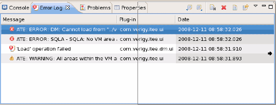
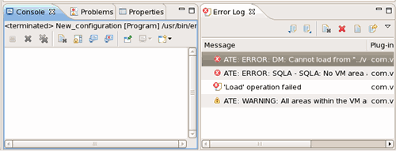
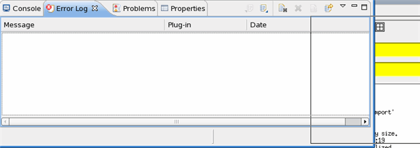
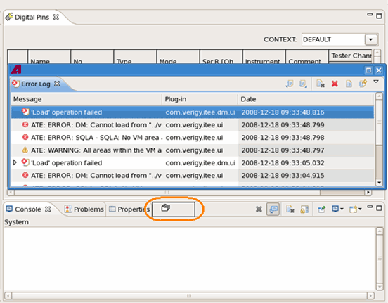
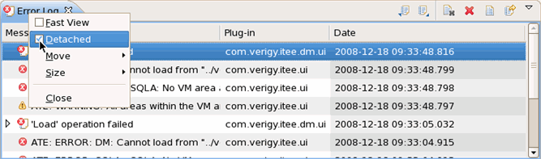
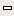
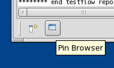

Arranging views
To arrange Views in a perspective, you can drag a view to the place you want, move it out of or back to the Work Center and maximize or minimize it.
About this task
The Error Log View is used as an example in the operations below. You can use the similar procedure to change your perspective layout.
Procedures
Drag a view to the right side
Click the header of the Error Log view and drag it to the right side. When a black line rectangle and a right arrow appear, release your mouse to drop the view.
The Console view and Error Log view are placed side by side.

Drag a view out of the Work Center
To make the view detached from the Work Center, you can
- Grab the Error Log view and drag it out of the Work Center. When a black line rectangle and
the icon appear, release the mouse to drop the view.

- Right-click the view header and select Detached from the shortcut menu.

Move the detached view back to the Work Center
To move a detached view back to the Work Center, you can
- Grab the view header and drag it to a place in the Work Center. When a black line rectangle
appears, release the mouse to drop the view.

- Right-click the view header and remove the selection of Detached from the shortcut menu.

Maximize/minimize the view in the Work Center
To maximize or minimize the view:
- Click the icon and

in the upper right corner of the view - Double-click the header of the view
- Right-click the header of the view and select Maximize or Minimize
Fast Views
Assumed you need a specific view very often for a short period to do a quick change and then closed or hidden again. If the reserved screen area for stacked or detached views (see sections above) is too small, you can configure a view as fast view.
A fast view is minimized to the bottom of the workspace and can be brought up at any time, hovering on top of other views. For example, you may want to make the Pin Browser a fast view and then quickly open it to change the focus of the Hardware view.

SmarTest stores the configuration of fast views together with the perspective layout.
Functional changes
- Introduced before SmarTest 6.3.2